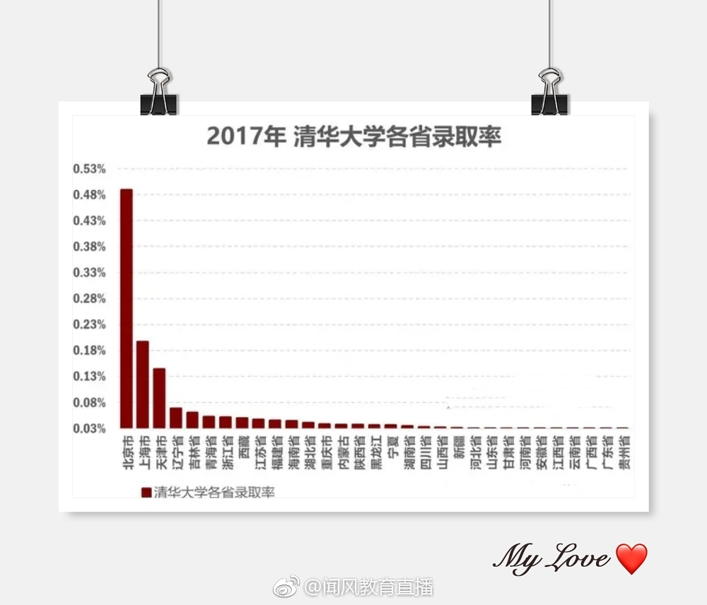

回复@ETF拯救世界:资本市场就这么点事，只要知道对方想干什么就能猜出下一步出什么招数了。//@ETF拯救世界:另外，认为科创板会大幅拉低主板市场估值的，我觉得可能想多了。科创板一半以上上市公司我估计是亏损的，市盈率是负的。你想让他们拉低谁的估值？@ETF拯救世界:科创板，我预计投资者门槛在30-50万之间。大概率是50万。
回复@化工_达人:500最高市值502亿，最低31亿。中位数115亿。500并不是单纯以市值为标准的。//@化工_达人:今天好奇中证500成份股的市值，印象中平均在百亿以上，刚随便看了几十只股票，发现很多都是60亿左右，最低的有看到40多亿的，是不是跌太惨了，按理说50亿很难进入指数了吧……@ETF拯救世界:标普500pb大概是3倍多一点。纳斯达克100大概是5倍多一点。英国100两倍多。印度3倍。中证500即将跌破1.5倍（历史最低1.3x）。连传媒都1.8了。我其实很好奇，这么洗传媒年报出来会怎样……
刚才又看到有人说，最近这么爆雷，500的数据会很难看。把我吓得赶紧滚去算数据：截至今日，中证500有287家公司公布业绩预告。按照预告净利润增长下限计算，有134家业绩下降，有146家利润上升，其余不变。按照净利润增长上限计算，有101家业绩下降，有186家业绩上升，怎么看都是利润增长的公司多。不知道那些开心笑的牙都快掉的人那么欢乐的点在哪儿啊。这次洗澡，是很多公司一次把商誉搞定，不用摊销退市。明年只会更好。
回复@bear_宋:隔壁陕西还有8所呢。另一边隔壁河北是不是一所都没有，忘了……河北考生才是惨。//@bear_宋:所有学校都会对本地生源有倾斜，问题在于北京有26所211，而人口大省河南只有一所211。@闻风教育直播:【考上清华大学到底有多难】以2017年数据为准，录取率最高的地区是北京，每1000名考生，约有5名可考入清华，录取率约0.5%。北京、上海、天津位列全国前三。贵州省考进清华最难，每1万名考生仅有1.5名能进入清华，录取率仅0.015%。以下是全国清华大学录取率排序。 
回复@难道我是啊qiu:2018年，学校计划招生6410人，其中浙江省内计划招生3100人，招生规模与2017年持平。//@难道我是啊qiu:浙大对浙江人貌似一视同仁（一个杭州人的道听途说）//@ETF拯救世界:有没有复旦和浙大的录取比例。哪个学校不是本地生源多。@闻风教育直播:【考上清华大学到底有多难】以2017年数据为准，录取率最高的地区是北京，每1000名考生，约有5名可考入清华，录取率约0.5%。北京、上海、天津位列全国前三。贵州省考进清华最难，每1万名考生仅有1.5名能进入清华，录取率仅0.015%。以下是全国清华大学录取率排序。
有没有复旦和浙大的录取比例。哪个学校不是本地生源多。@闻风教育直播:【考上清华大学到底有多难】以2017年数据为准，录取率最高的地区是北京，每1000名考生，约有5名可考入清华，录取率约0.5%。北京、上海、天津位列全国前三。贵州省考进清华最难，每1万名考生仅有1.5名能进入清华，录取率仅0.015%。以下是全国清华大学录取率排序。
钓鱼成功。说我不行的都拉黑了。@ETF拯救世界:如果你看了3-5年财经论坛，微博之类的，还没发现一半（至少）财经类的v都是水货（包括我），那你就是水货。水货说的很多东西能信吗你自己说说。独 立 思 考 ！
回复@愿赌服输K:在美国，在欧洲，长期看都是小盘股跑赢大盘股。凭什么未来A股小盘股无法重现辉煌呢？现在只是不够便宜而已。人云亦云真的非常可怕，我建议大家一定要有独立思考的精神。@ETF拯救世界:买东西看最近表现是极其短视的。2014年7月，创业板比2012年底翻了两倍，50还跌了。那时候你会不会说50是辣鸡？我特别讨厌谁好就追谁，谁倒霉了就假装不认识。我就喜欢你落难我来帮你，你富贵我转身离开。做投资，做人，都是如此。你感受一下。 道不同不相为谋，以后理念不同的直接拉黑，各生欢喜。
回复@某同学321:1-2，明天中午吧。明天大概率拉升，不过一两车问题不大。//@某同学321:E大，这次发几车呀//@ETF拯救世界:回复@小狗上马路:别嘴炮。让看空的把做空IC的图贴上来。//@小狗上马路:昨天雪球好多人担心中证500大跌，怎么今天没反应就等今明两天了，加油@ETF拯救世界:正常的市场本来就应该有几百块的股票，也应该有大量几毛钱甚至几分钱的股票。频繁爆雷，频繁跌停都是正常现象。
回复@小狗上马路:别嘴炮。让看空的把做空IC的图贴上来。//@小狗上马路:昨天雪球好多人担心中证500大跌，怎么今天没反应就等今明两天了，加油@ETF拯救世界:正常的市场本来就应该有几百块的股票，也应该有大量几毛钱甚至几分钱的股票。频繁爆雷，频繁跌停都是正常现象。
回复@MaLX74624:十倍等于2的10次方等于1024？？？你们对于“十倍股”是不是有什么误会？？？//@MaLX74624:回复@guoqiao:翻n倍等于原值乘以2的N次方@ETF拯救世界:买东西看最近表现是极其短视的。2014年7月，创业板比2012年底翻了两倍，50还跌了。那时候你会不会说50是辣鸡？我特别讨厌谁好就追谁，谁倒霉了就假装不认识。我就喜欢你落难我来帮你，你富贵我转身离开。做投资，做人，都是如此。你感受一下。 道不同不相为谋，以后理念不同的直接拉黑，各生欢喜。
回复@guoqiao:刚才在外面没法查凭印象说，现在告诉你2012-2014.7创业板涨了155%。烦死了get不到重点。//@guoqiao:翻了两倍，指的是变成了原来的三倍，还是四倍？不是抬杠，只是人们的表述往往模糊。@ETF拯救世界:买东西看最近表现是极其短视的。2014年7月，创业板比2012年底翻了两倍，50还跌了。那时候你会不会说50是辣鸡？我特别讨厌谁好就追谁，谁倒霉了就假装不认识。我就喜欢你落难我来帮你，你富贵我转身离开。做投资，做人，都是如此。你感受一下。 道不同不相为谋，以后理念不同的直接拉黑，各生欢喜。
买东西看最近表现是极其短视的。2014年7月，创业板比2012年底翻了两倍，50还跌了。那时候你会不会说50是辣鸡？我特别讨厌谁好就追谁，谁倒霉了就假装不认识。我就喜欢你落难我来帮你，你富贵我转身离开。做投资，做人，都是如此。你感受一下。 道不同不相为谋，以后理念不同的直接拉黑，各生欢喜。
回复@归去来兮5100:情有独钟从何而来？50 300 红利仓位已经20%了，远超500。下结论之前先看看事实。另外，你看最近的表现评价一个品种好不好吗？可以取关了@ETF拯救世界:真正的熊市会把绝大多数人的耐心和信心都消磨干净。所以这种时候，该买的买好，再留点钱应对继续下跌。然后该干嘛干嘛去，别看了。找点有意思的事情做。
回复@小号1234567小童鞋:他一个人抢了十几块。大家快过来打他//@小号1234567小童鞋:还不如努点力抢E大的新年红包，我去年一下子抢了十几块，集福才抢2块@ETF拯救世界:我没有集过五福。玩过的朋友说说，费半天劲能分多少红包。